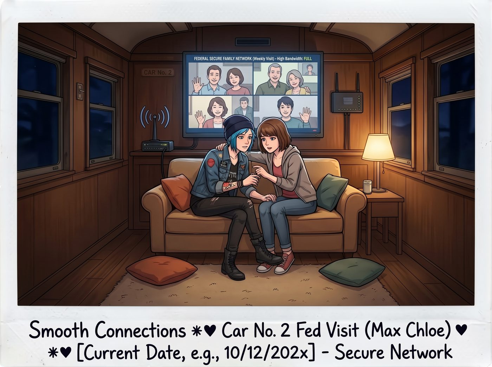

聯邦加密衛星探親時間

星期五的夜晚，二號車廂迎來了每週一次的聯邦加密衛星網路探親時間。
靠著 Lily 借來的高頻寬連線，Max 和 Chloe 終於能和外界進行流暢的視訊通話。而這三通打給前排配角與家屬的電話，直接把車廂裡的五個人憋笑憋出了內傷。
一、末日狂歡的David與心力交瘁的Joyce
視訊畫面一接通，螢幕上出現的不是溫馨的客廳，而是一個堆滿了罐頭和瓶裝水的地下車庫。
David 穿著全套的美軍沙漠迷彩服，脖子上掛著防毒面具，正以一種我早說過這一天會來的狂熱姿態對著鏡頭敬禮。這場全球大流行對別人是災難，對這個重度被害妄想症加末日生存狂的退伍老兵來說，簡直就是他人生的高光時刻、他的超級盃。
「Chloe！我就說政府的供應鏈撐不過三天！」David 在鏡頭前驕傲地拍著身後那座由五百卷衛生紙堆成的堡壘，「我從十年前就開始囤積這些戰略物資了！現在鎮上的人都在為了一包衛生紙打架，而我們家擁有阿卡迪亞灣最大的纖維素儲備！」
鏡頭邊緣，Joyce 穿著圍裙，生無可戀地端著一杯紅酒走過，冷冷地補了一刀：「是啊，他為了買這些衛生紙，當年差點把我們的房貸斷了。現在他每天逼我用軍事密碼敲門才能進廚房拿鹽。」
看著螢幕裡那個把衛生紙當成黃金的繼父，Chloe 拼命咬住嘴唇，轉頭看了一眼自己營地角落裡那堆合作專案空投的高階物資和黑啤酒。「幹得漂亮，David。」Chloe 憋笑憋得肩膀都在發抖，假裝嚴肅地舉起手裡的啤酒罐，「請務必誓死守衛妳們的廁所。」
坐在工作站後的 Lily 則推了推眼鏡，在備忘錄上無情地記錄：「底層物理囤積。毫無流動性。衛生紙資產折舊率百分之百。判定：低效生存策略。」
二、西雅圖的學術災難
第二通電話打給了在西雅圖讀研究所的科學宅男 Warren 和無人機狂熱者 Brooke。這兩個曾經在學院自詡為理科天才的傢伙，在封城期間的表現堪稱一場高科技喜劇。
「Max！救命！」畫面裡的 Warren 頭髮像個鳥巢，戴著一副墨鏡，看起來像是在地下室待了十年。
「你為什麼戴墨鏡？」Max 疑惑地問。
「因為我試圖用微波爐零件和紫外線燈管，在公寓裡自製一個買菜消毒艙。」Warren 欲哭無淚地指著自己紅腫的臉頰，「結果紫外線洩漏，我把自己的視網膜和臉皮給重度曬傷了。我現在只能靠摸黑走路。」
就在這時，Brooke 的聲音從視訊另一頭的分割畫面傳來，背景音裡伴隨著瘋狂的警報聲。「Warren 你那是活該！Max，大學把機器人實驗室封了，我只好改裝了我的無人機去樓下超市偷運物資！」Brooke 氣急敗壞地對著鏡頭大喊，「結果那台該死的無人機在半空中被海鷗打劫了！海鷗搶走了我最後一袋無麩質麵包！現在無人機掛在市政廳的避雷針上，警察正在我家門口敲門，說我涉嫌未經授權的航空器活動！」
沙發上的 Victoria 已經笑到把臉埋進了抱枕裡，發出陣陣悶悶的鵝叫聲。「這就是你們理科生的生存能力？」Victoria 擦著眼角笑出的眼淚，毫不留情地嘲諷，「連一隻海鷗都打不過，還被警察查水表。Max，請妳告訴他們，我們這裡是用合作專案的無人機來送神戶牛肝的。」
Max 趕緊捂住麥克風，憋著笑對鏡頭說：「撐住，Warren。Brooke，記得跟警察說妳是在進行空氣動力學測試……」
三、郊區中產的崩潰
最後一通電話是 Max 的父母，Ryan 和 Vanessa。這是一對標準的、住在西雅圖郊區的中產階級夫妻。在封城的衝擊下，他們沒有經歷末日，也沒有搞出爆炸，而是陷入了極度平庸的居家辦公地獄。
「Maxine，寶貝，妳在森林裡還好嗎？」Vanessa 穿著瑜伽服，背景是他們家裝修精美的客廳，但畫面卡頓得像PPT。
「Vanessa！別用網路了！我在跟客戶開會議！」Ryan 在背景裡崩潰地大喊，「家裡的頻寬被妳的4K瑜伽直播吸乾了！」
「是你非要在這個時候下載那該死的動物森友會更新包！」Vanessa 毫不客氣地吼了回去。
接著，Vanessa 轉過頭，神經兮兮地對著鏡頭舉起一個裝著渾濁氣泡液體的玻璃罐：「看，Max，這是我這週培育的天然酸種酵母，我給它起名叫麵團寶寶。我每天給它唱歌，但它今天聞起來像死老鼠。妳說我是不是殺了它？」
看著父母為了路由器頻寬吵架、對著一罐發臭的酵母發瘋，Max 無奈地扶住了額頭。「媽，酵母可能只是發酵過度了。你們……吃得還好嗎？」
「我們還行，就是超市裡買不到肉了。」Ryan 湊到鏡頭前，滿臉擔憂地看著 Max 身後那個有些昏暗的車廂，「寶貝，妳們五個女孩子在野外一定很苦吧？沒有暖氣，沒有熱水，是不是每天只能吃野果和樹皮？」
四、樹皮謊言與牛排現實
此時此刻，二號車廂的餐桌上，正擺著 Kate 剛剛用高溫噴槍烤出來的完美巴斯克起司蛋糕，Chloe 正在徒手撕一隻用航空燃油極速炙烤過的頂級肋眼牛排，而 Victoria 正用骨瓷杯喝著高壓萃取出來的義式濃縮咖啡。
Max 咽了一口口水，看著自己腳上那雙 Victoria 剛送的、價值三千五百美金的羊絨老錢徒步靴。「是的，爸。我們……我們過得非常艱難。」Max 盡力擠出一個楚楚可憐的表情，聲音微微發抖，其實是憋笑憋的，「我們每天都在跟大自然搏鬥。你們在家一定要照顧好自己，不用擔心我。」
五、幽靈船的行政總結
掛斷通話的那一瞬間，整個二號車廂爆發出了震耳欲聾的爆笑聲。
Chloe 笑得直接從高腳凳上翻了下來，躺在地上捂著肚子打滾：「天哪！海鷗搶了無人機！衛生紙堡壘！這就是外面文明社會的現狀嗎？！」
Kate 一邊笑一邊切著蛋糕，溫柔地感嘆：「對比起來，我們這裡簡直像是在天堂度假。」
Lily 依然端坐在工作站前，手裡端著熱牛奶。她看著笑作一團的眾人，推了推圓框眼鏡，用極其軟糯的聲音為今晚的探親通話做出了最終的行政總結。
「系統性災難是一面鏡子。它證明了常規的物理防禦，比如衛生紙，和低階的技術嘗試，比如紫外線燈，在沒有行政權限的保護下，都只是徒勞的掙扎。」Lily 輕輕抿了一口牛奶，「很慶幸，各位當初選擇了登上一艘由黑魔法驅動的幽靈船，而不是留在岸上與海鷗搏鬥。」